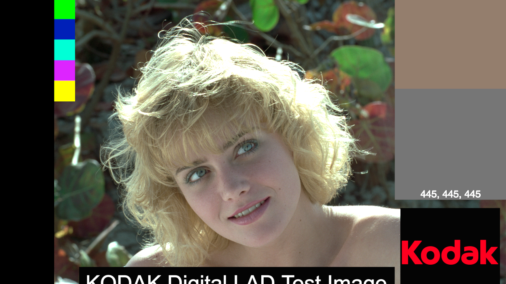

Comparing full range encoding vs. tv range, but also yuv420p vs. yuvj420p. We believe that this is well supported on web browsers, and dont see a downside to it. There may be cases where other applications do not read it. The code to generate these files is here.
|
Test-1: Greyramp Test-2: Radial gradent Test-3: Marcie |
Test-1: GreyrampNormal encodeUsing the PNG greyramp, with the normal "TV" out range of 16-235, and using yuv420p encoding. ffmpeg -y -loop 1 -i ./greyramp-fulltv/greyscale-raw.png -sws_flags spline+accurate_rnd+full_chroma_int -vf "scale=in_range=full:in_color_matrix=bt709:out_range=tv:out_color_matrix=bt709" -c:v libx264 -t 5 -pix_fmt yuv420p -qscale:v 1 -color_range 1 -colorspace 1 -color_primaries 1 -color_trc 13 ./greyramp-fulltv/greyscale-tv.mp4 Full range encoding.Greyramp encoded using out_range=full yuv420p encoding, here we also set color_range=2 to let the decoder know to process it correctly. ffmpeg -y -loop 1 -i ./greyramp-fulltv/greyscale-raw.png -sws_flags spline+accurate_rnd+full_chroma_int -vf "scale=in_range=full:in_color_matrix=bt709:out_range=full:out_color_matrix=bt709" -c:v libx264 -t 5 -pix_fmt yuv420p -qscale:v 1 -color_range 2 -colorspace 1 -color_primaries 1 -color_trc 13 ./greyramp-fulltv/greyscale-full.mp4 Test-2: Radial gradentSource png fileSource png fileThis is a less forgiving test image Normal encodeUsing the radial gradent with normal yuv420p encoding and yuv420p. ffmpeg -y -loop 1 -i ../sourceimages/radialgrad.png -sws_flags spline+accurate_rnd+full_chroma_int -vf "scale=in_range=full:in_color_matrix=bt709:out_range=tv:out_color_matrix=bt709" -c:v libx264 -t 5 -pix_fmt yuv420p -qscale:v 1 -color_range 1 -colorspace 1 -color_primaries 1 -color_trc 13 ./greyramp-fulltv/radialgrad-tv.mp4 Full range encoding.Using the full range yuv420p encoding with color_range=2 ffmpeg -y -loop 1 -i ../sourceimages/radialgrad.png -sws_flags spline+accurate_rnd+full_chroma_int -vf "scale=in_range=full:in_color_matrix=bt709:out_range=full:out_color_matrix=bt709" -c:v libx264 -t 5 -pix_fmt yuv420p -qscale:v 1 -color_range 2 -colorspace 1 -color_primaries 1 -color_trc 13 ./greyramp-fulltv/radialgrad-full.mp4 Alternate full range encodingThis is an older alternative to full-range encoding, that ffmpeg is currently deprecating. ffmpeg -y -loop 1 -i ../sourceimages/radialgrad.png -sws_flags spline+accurate_rnd+full_chroma_int -vf "scale=in_range=full:in_color_matrix=bt709:out_range=full:out_color_matrix=bt709" -c:v libx264 -t 5 -pix_fmt yuvj420p -qscale:v 1 -color_range 2 -colorspace 1 -color_primaries 1 -color_trc 13 ./greyramp-fulltv/radialgrad-fullj.mp4 Using full range without color_range flagThis is what happens if you specify full range without the color_range flag (color_range=0). DONT DO THIS! ffmpeg -y -loop 1 -i ../sourceimages/radialgrad.png -sws_flags spline+accurate_rnd+full_chroma_int -vf "scale=in_range=full:in_color_matrix=bt709:out_range=full:out_color_matrix=bt709" -c:v libx264 -t 5 -pix_fmt yuv420p -qscale:v 1 -color_range 0 -colorspace 1 -color_primaries 1 -color_trc 13 ./greyramp-fulltv/radialgrad-full0.mp4 Full range with yuv444 (chrome only)This is testing yuv444p but still 8-bit, this will only work on chrome. ffmpeg -y -loop 1 -i ../sourceimages/radialgrad.png -sws_flags spline+accurate_rnd+full_chroma_int -vf "scale=in_range=full:in_color_matrix=bt709:out_range=full:out_color_matrix=bt709" -c:v libx264 -t 5 -pix_fmt yuv444p -qscale:v 1 -color_range 2 -colorspace 1 -color_primaries 1 -color_trc 13 ./greyramp-fulltv/radialgrad-full444.mp4 10-bit encoding, tv-range (chrome only)This is testing 10-bit encoding, yuv444p10le ffmpeg -y -loop 1 -i ../sourceimages/radialgrad.png -c:v libx264 -t 5 -preset placebo -qp 0 -x264-params "keyint=15:no-deblock=1" -pix_fmt yuv444p10le -sws_flags spline+accurate_rnd+full_chroma_int -vf "colorspace=bt709:iall=bt601-6-625:fast=1" ./greyramp-fulltv/radialgrad-raw-10bit.mp4 This is using RGB encodinglibx264rgb 8-bit mp4 (not supported) ffmpeg -y -loop 1 -i ../sourceimages/radialgrad.png -c:v libx264rgb -t 5 -preset placebo -qp 0 -x264-params "keyint=15:no-deblock=1" ./greyramp-fulltv/radialgrad-raw-rgb.mp4 Test-3: MarcieSource png fileSource png fileffmpeg -y -loop 1 -i ../sourceimages/radialgrad.png -c:v libx264rgb -t 5 -preset placebo -qp 0 -x264-params "keyint=15:no-deblock=1" ./greyramp-fulltv/radialgrad-raw-rgb.mp4 Normal encodingmarcie out_range=tv -pix_fmt yuv420p 16-235 range ffmpeg -y -loop 1 -i ../sourceimages/Digital_LAD_raw.png -sws_flags spline+accurate_rnd+full_chroma_int -vf "scale=in_range=full:in_color_matrix=bt709:out_range=tv:out_color_matrix=bt709" -c:v libx264 -t 5 -pix_fmt yuv420p -qscale:v 1 -color_range 1 -colorspace 1 -color_primaries 1 -color_trc 13 ./greyramp-fulltv/marcie-tv.mp4 Full Rangeffmpeg -y -loop 1 -i ../sourceimages/Digital_LAD_raw.png -sws_flags spline+accurate_rnd+full_chroma_int -vf "scale=in_range=full:in_color_matrix=bt709:out_range=full:out_color_matrix=bt709" -c:v libx264 -t 5 -pix_fmt yuv420p -qscale:v 1 -color_range 2 -colorspace 1 -color_primaries 1 -color_trc 13 ./greyramp-fulltv/marcie-full.mp4 |